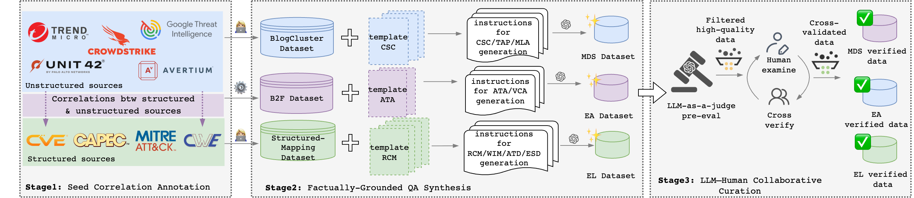

A Benchmark for Retrieval-Augmented LLMs over Heterogeneous Cyber Threat Intelligence
Per-task F1 across three retrieval configurations: CB (Closed-Book), VR (Vanilla RAG), and DS (Domain-Specific strategy: EtR for EL, DtR for EA, CSKG-guided for MDS). Multi-Doc Synthesis omits CB as the task inherently requires multi-document retrieval. All ten models are evaluated on a 691-pair subset of CTIConnect; full-benchmark verification on three representative models confirms that rankings and per-category structure are preserved on all 1,860 pairs.
Click any task column header to sort. Bars within each cell are proportional to F1. Best per column is highlighted in red.
CTI knowledge spans structured taxonomies (CVE, CWE, CAPEC, MITRE ATT&CK) and unstructured vendor reports. Queries expressed in one vocabulary systematically fail to match relevant evidence in another — causing vanilla embedding-based retrieval to break down. CTIConnect is the first retrieval-augmented benchmark that systematically evaluates this gap across the full CTI task landscape.
We integrate 5 heterogeneous CTI sources into 1,860 expert-verified QA pairs across 9 tasks in 3 categories. Each category is paired with a domain-specific retrieval strategy and evaluated against vanilla RAG baselines on 10 state-of-the-art LLMs.
Structured knowledge bases
Unstructured vendor threat reports · 321 reports from 35 sources
…and 30 more vendor and security-news sources (BleepingComputer, Dark Reading, The Hacker News, Symantec, Kaspersky, ESET, Check Point, Microsoft, NCC Group, etc.)
Organized into three categories based on the source types they bridge. Together, they cover all cross-source directions in CTI analysis.
Each task category exhibits a distinct manifestation of the cross-source semantic gap. We design a domain-specific retrieval strategy for each, evaluated against Closed-Book and Vanilla RAG baselines.
The LLM extracts the security-relevant semantic content of the input description (vulnerability type, weakness mechanism, impact) and canonicalizes it into keyphrases aligned with the target KB. The canonicalized keyphrases are then embedded as a dense query for top-k retrieval — the retrieval path itself stays purely dense.
Decomposes the input passage into N atomic behaviors, canonicalizes each into taxonomy-aligned vocabulary, and performs independent retrieval per behavior before aggregation. Addresses the vocabulary mismatch between narrative prose and formal taxonomy entries.
Builds a Cybersecurity Knowledge Graph offline with CTINexus: each report is reduced to a bag of canonical entities by extracting STIX-aligned named entities and resolving aliases against a MITRE-Groups dictionary. At query time, corpus reports are ranked against the query entity bag via BM25 with IDF weighting — bypassing the alias-driven and chunk-noise failures of embedding retrieval.
Tailored strategies yield substantial gains over generic embedding retrieval — +35.2% for Entity Linking, +16.0% for Entity Attribution, and +11.3% for Multi-Doc Synthesis — with the magnitude depending on the semantic gap of each category.
Query-to-gold vs. query-to-top-1 cosine gap by category: 0.06 for EL, 0.31 for EA, 0.43 for MDS. EL is near-saturated, EA suffers vocabulary mismatch, and MDS is dominated by alias-driven near-miss distractors.
For EL and MDS the bottleneck is retrieval infrastructure; for EA it shifts to model reasoning. Intra-family scaling benefits concentrate in EA — LLaMA-3 8B→405B gains +29.5% on attribution alone.
GPT-5 leads overall at 81.4%, but the next three (Qwen-3-235B, GPT-4o, Claude-Sonnet-4) cluster within 1%. Qwen-3-235B even tops EL with perfect F1 on three tasks — CTIConnect discriminates along multiple capability axes.

| Data source | Tasks | QA | Ground truth |
|---|---|---|---|
| Structured Mappings | RCM (290), WIM (308), ATD (261), ESD (280) | 1,139 | Official KB links |
| Report Clusters | TAP (135), MLA (95), CSC (111) | 341 | Manual clustering |
| B2F Alignments | ATA (160), VCA (220) | 380 | Expert annotation |
| Total | 9 tasks | 1,860 | — |
All 1,860 QA pairs are produced through a three-stage pipeline ensuring authoritative ground truth and quality control.
If you find CTIConnect useful in your research, please cite our paper.
@inproceedings{cheng2026cticonnect,
title = {CTIConnect: A Benchmark for Retrieval-Augmented LLMs over Heterogeneous Cyber Threat Intelligence},
author = {Cheng, Yutong and Liu, Yang and Li, Changze and Song, Dawn and Gao, Peng},
booktitle = {Proceedings of the 32nd ACM SIGKDD Conference on Knowledge Discovery and Data Mining V.2 (KDD '26)},
year = {2026},
address = {Jeju Island, Republic of Korea},
publisher = {ACM},
doi = {10.1145/3770855.3817527},
isbn = {979-8-4007-2259-2}
}